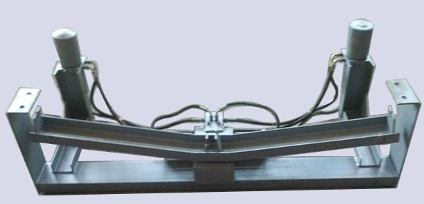
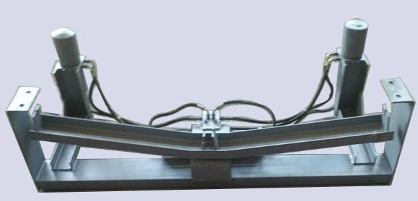
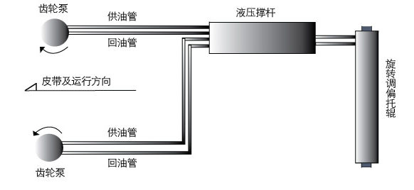
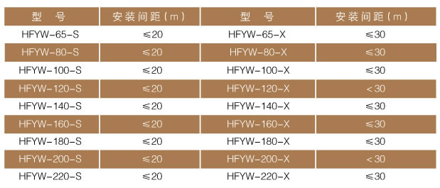

产品目录 - 液压调偏装置
概述
 

HCYYJP上液压纠偏装置 HCYYJP下液压纠偏装置
液压全自动皮带调偏装置对中装置有上、下条形托辊的功能和独特的液压校正功能于一身，因此具有高效校正速度。自动检测此时跑偏予以校正，使皮带始终处于合理状态运行，因而抵消皮带机因安装不当、运转失灵、特料冲击、负荷变化、皮带断面间伸长率不均匀等现象。
液压全自动皮带调偏装置是调心论的摩擦旋转产生动力，故无需电源，自动调整、自动校正，具有结构简单、性能可靠、安装方便等特点，采用全封闭结构，故能在任何恶劣环境下正常工作。
二、工作原理

齿轮泵Gear pump 供油管 supply oil pipe, 回油管oil return pipe 液压撑杆Hydraulic strut 旋转调偏托辊 Rotary offset roller 皮带及运行方向 Belt and running direction
在机架上的一组调心托辊的两侧相同高度设置两只垂直安装的检驱轮，检驱轮转轴与油泵动力输入轴相连，用两个固定支架分别把左右两侧的检驱轮与油泵固定在调心托辊支架上，复合油缸的尾部与固定支架铰接，复合油缸的活塞杆与调心托辊的托辊支架转动部分连接，用油管把油泵的油口与复合油缸尾部接通，当皮带向左跑偏，触动左侧检驱轮左侧油泵迅速输出压力油，通过复合油缸的油路集成块进入油缸的无杆腔，推动活塞和活塞杆，有杆腔的液压油经油路集成块回复油缸的油箱中，活塞杆迅速伸出，推动调心托辊顺时针转动（即调心托辊左侧向前偏转）驱使皮带向右跑偏而居中。
当皮带向右跑偏触动右侧检驱轮，右侧油泵输出压力油，通过复合油缸的油路集成块进入油缸的油箱中，活塞杆迅速缩回，拉动调心托辊逆时针转动（调心托辊向后偏转）驱使调心托辊的固定支架的右侧设置复合油缸皮带向左跑偏而居中。
三、产品型号说明

选型主要依据带式输送机的皮带宽度确定型号，如带宽为1400mm的液压纠偏装置，则选HCYYJP-S-14型清扫器。
性能特点：
（一）可靠性高：
所有部件工作负荷低，工作时间短，使用寿命长。
（二）反应灵敏，纠正效率高：
只要皮带跑偏搭触到检驱轮上，皮带自动纠偏装置立即工作，使调心托辊旋转一定角度，皮带很快被纠正。
（三）具有很重要的调心托辊定位功能：
调心托辊旋转后对皮带自动产生纠偏力，皮带同时对调心托辊有一反作用力，该力使调心托辊反转复位。
（四）可用在防爆、多尘、潮湿、高温场合：
不用电及电气控制元件，适用于井下及易燃、易爆等高危环境。
（五）无需维护对皮带无任何伤害，部件通用、更换方便。
（六）下纠偏可以保护皮带机皮带下垂,纠偏后准确度达到±5%。
四、技术参数：
油缸拉力：800kg
油缸推力：1176kg
活塞杆行程 ：150mm
油泵流量：5ml/r
五、适用条件：
胶带宽度：650mm-2200mm
机架形式：刚性架式
托辊槽角：各种槽角
HCYYJP-S/X-B液压纠偏装置的最大安装距离（m）-参考值
